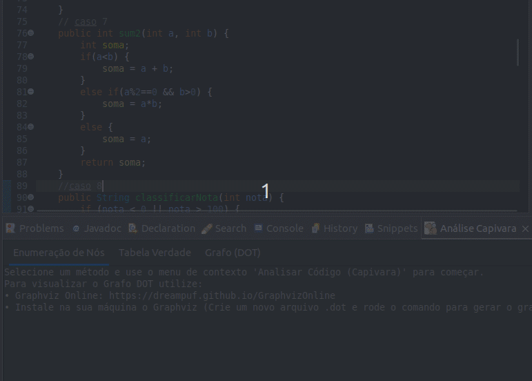

Capivara 1.1.0 Atual
Análise visual nativa com GMF/Eugenia.
✨ O que mudou?
A versão 1.1.0 traz uma reformulação completa na forma de visualizar os dados:
Novas Funcionalidades
- Visualização Integrada (GMF): O grafo agora é renderizado nativamente dentro do Eclipse, eliminando a necessidade de ferramentas externas.
- Interatividade: Funcionalidade de mover as arestas e nós para reorganizar o layout do diagrama conforme sua preferência.
- Exportação: Adicionada a funcionalidade de exportar o diagrama como imagem (clique com o botão direito no Grafo > File).
- Informação Detalhada: É possível obter informações dos nós e saber se a aresta pertence ao caminho true ou false de uma condicional.
Remoções e Alterações
🚀 Instalação
Método 1: Update Site (Recomendado)
- No Eclipse, acesse Help > Install New Software.
- Utilize o endereço:
https://eduardonascimentojf.github.io/capivara-plugin/ - Conclua a instalação e reinicie o Eclipse.
Método 2: Instalação Manual (Dropins)
Caso tenha problemas com o Update Site, você pode instalar manualmente:
- Baixe o arquivo
.jarmais recente na aba Releases do repositório. - Navegue até a pasta de instalação do seu Eclipse.
- Localize a pasta
dropins(se não existir, crie uma). - Copie o arquivo
.jarpara dentro desta pasta. - Reinicie o Eclipse.
🖱️ Como Usar
O menu de contexto foi atualizado com duas opções para agilizar o processo:
| Opção de Menu | O que faz? |
|---|---|
Capivara | Node Enumerate |
Realiza apenas a enumeração das linhas do método selecionado (adiciona comentários /*Nó X*/ no código), sem gerar gráficos. |
Capivara | Generate GFC |
Cria o arquivo de modelo e abre automaticamente a visualização do Grafo de Fluxo de Controle (GFC). |
📝 Exemplo de Análise
Abaixo demonstramos como o plugin processa um código simples.
1. Código de Entrada:
public int exemplo(int a) {
if (a > 0) {
return a * 2;
} else {
return 0;
}
}2. Resultado da Enumeração (Node Enumerate):
/*Linha 01*/ /*Nó 01*/ public int exemplo(int a) {
/*Linha 02*/ /*Nó 02*/ if (a > 0) {
/*Linha 03*/ /*Nó 03*/ return a * 2;
/*Linha 04*/ /*Nó 04*/ } else {
/*Linha 05*/ /*Nó 04*/ return 0;
/*Linha 06*/ /*Nó 04*/ }
/*Linha 07*/ /*Nó 01*/ }🎨 Visualização Gráfica (Generate GFC)
Ao utilizar a opção Generate GFC com o código acima, o diagrama será exibido desta forma:

🎨 Entendendo o Grafo: Legenda
O grafo utiliza cores e formas para diferenciar o papel de cada nó no fluxo de controle.

| Tipo de Nó | Descrição |
|---|---|
| ENTRY (Verde) | O ponto de início do método. |
| PROCESSING (Preto) | Comandos sequenciais. |
| DECISION (Azul) | Estrutura condicional (if). |
| LOOP DECISION (Laranja) | Estrutura de laço (while). |
| EXIT (Vermelho) | Término do fluxo (return). |
Capivara 1.0.0
Geração de Grafos DOT e Tabelas Verdade.
🤔 O que o Plugin Faz?
O Capivara auxilia na criação de casos de teste gerando:
- Enumeração de Nós: Mapeia linhas para nós.
- Tabela Verdade: Causa-efeito (2n).
- Grafo de Fluxo (DOT): Código para visualização externa.
🚀 Instalação
Método 1: Update Site (Recomendado)
Utilize o endereço:
https://eduardonascimentojf.github.io/capivara-plugin/
Método 2: Instalação Manual (Dropins)
- Baixe o arquivo
.jarda versão 1.0.0 em Releases. - Localize a pasta
dropinsna instalação do Eclipse. - Copie o arquivo para lá e reinicie a IDE.
🖱️ Como Usar
- Selecione o método no Eclipse.
- Clique com botão direito > "Analisar Código para Testes".

✨ Exemplo de Análise
Código de Entrada:
public int exemplo(int a) {
if (a > 0) {
return a * 2;
} else {
return 0;
}
}1. Enumeração de Nós
/*Linha 01*/ /*Nó 01*/ public int exemplo(int a) {
/*Linha 02*/ /*Nó 02*/ if (a > 0) {
/*Linha 03*/ /*Nó 03*/ return a * 2;
/*Linha 04*/ /*Nó 01*/ } else {
/*Linha 05*/ /*Nó 04*/ return 0;
/*Linha 06*/ /*Nó 01*/ }
/*Linha 07*/ /*Nó 01*/ }2. Tabela Verdade
Caso | a > 0 | Resultado (Efeito)
------------------------------------------------------------
1 | F | 0
2 | V | a * 23. Grafo (Código DOT)
Copie e cole no Graphviz Online.
digraph G {
rankdir=TB;
1 -> 2;
2 -> 3;
2 -> 4;
}🎨 Legenda
| Tipo de Nó | Descrição |
|---|---|
| ENTRY (Verde) | O ponto de início do método. |
| PROCESSING (Preto) | Comandos sequenciais. |
| DECISION (Azul) | Estrutura condicional (if). |
| LOOP DECISION (Laranja) | Estrutura de laço (while). |
| EXIT (Vermelho) | Término do fluxo (return). |